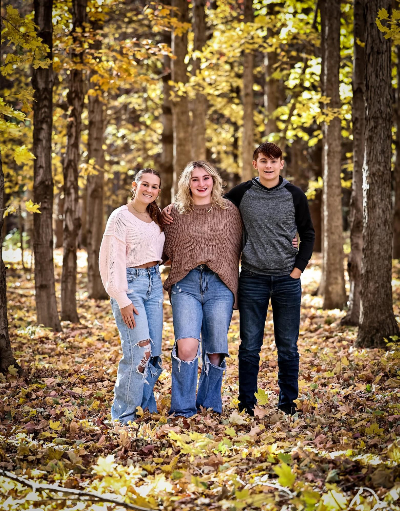
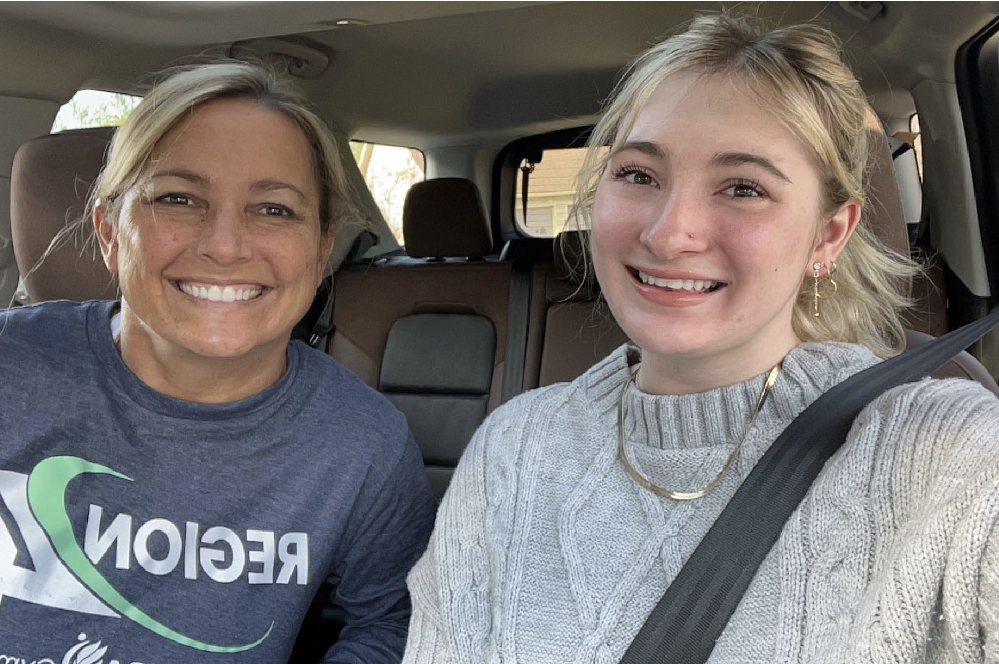
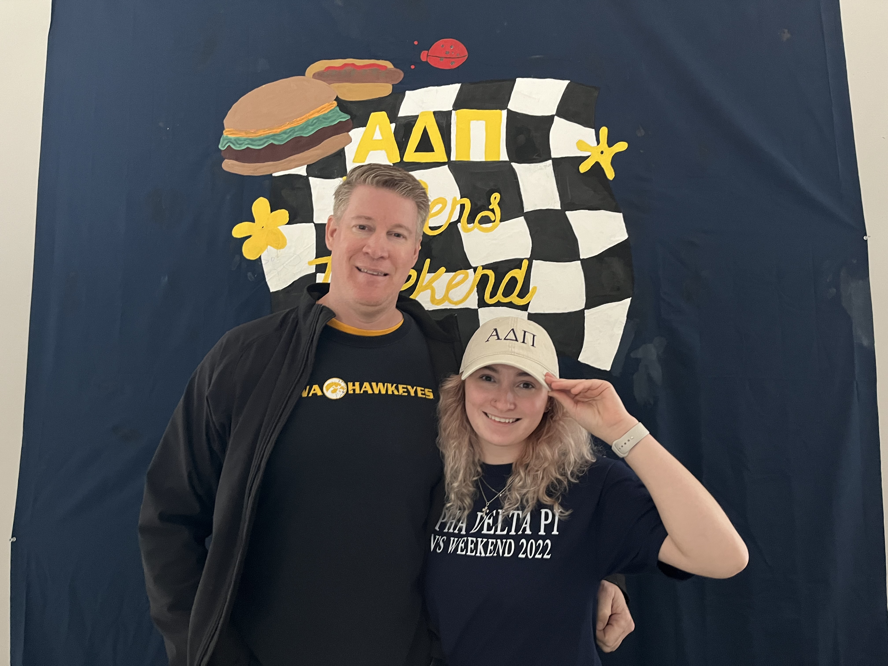
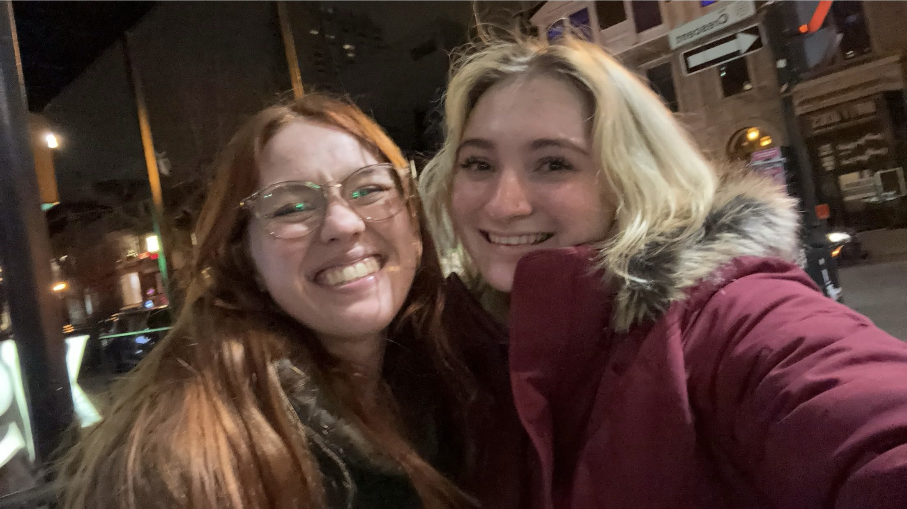
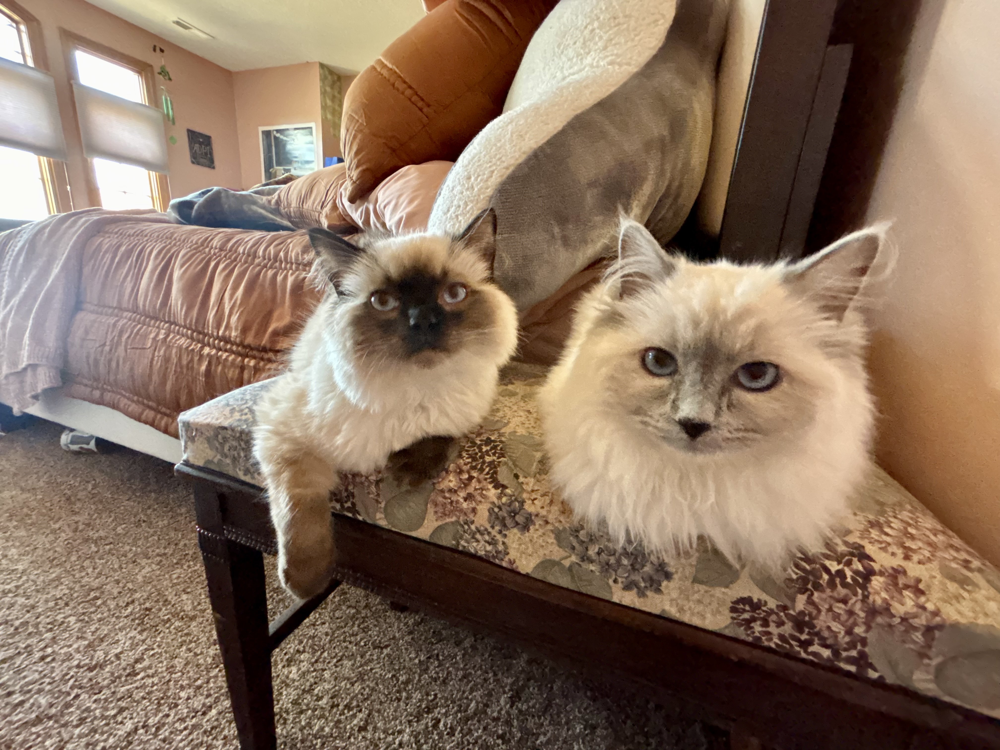

Family is my first priority!
My family has been with me every step of the way through college and have been a great support throughout the years.
I come from a rather extended family, and often consider my close friends as part of my own family too.
One of my favorite things about my family is how different everyone is, as well as our mutual enjoyment of travel
Family Photos



Quincy and the cats!

